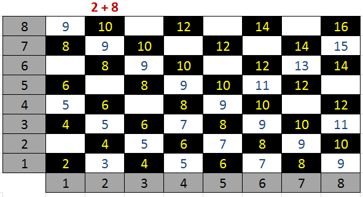

|
Mantiqiy amallarga oid masalalar
Boolean1. A butun soni berilgan. Jumlani rostlikka tekshiring: “A soni musbat”.
Boolean2. A butun soni berilgan. Jumlani rostlikka tekshiring: “A soni toq son”.
Boolean3. A butun soni berilgan. Jumlani rostlikka tekshiring: “A soni juft son”.
Boolean4. Ikkita butun A va B sonlari berilgan. Jumlani rostlikka tekshiring: “A>2 va B<=3”.
Boolean5. Ikkita butun A va B sonlari berilgan. Jumlani rostlikka tekshiring:
“A >= 0 yoki B < -2”
Boolean6. Uchta A, B, C butun sonlar berilgan. Jumlani rostlikka tekshiring:
“A<= B <= C”
Boolean7. Uchta A, B, C butun sonlar berilgan. Jumlani rostlikka tekshiring: “B soni A va C sonlari orasida yotadi”.
Boolean8. Ikkita butun A va B sonlari berilgan. Jumlani rostlikka tekshiring: “A va B sonlari toq sonlar”.
Boolean9. Ikkita butun A va B sonlari berilgan. Jumlani rostlikka tekshiring: “A va B sonlarning hech bo’lmaganda bittasi toq son”.
Boolean10. Ikkita butun A va B sonlari berilgan. Jumlani rostlikka tekshiring: “A va B sonlarning faqat bittasi toq son”.
Boolean11. Ikkita butun A va B sonlari berilgan. Jumlani rostlikka tekshiring: “A va B sonlarining har ikkalasi ham yoki toq son yoki juft son”.
Boolean12. Uchta A, B, C butun sonlar berilgan. Jumlani rostlikka tekshiring: “A, B, C sonlarning har biri musbat”.
Boolean13. Uchta A, B, C butun sonlar berilgan. Jumlani rostlikka tekshiring: “A, B, C sonlarning hech bo’lmaganda bittasi musbat”.
Boolean14. Uchta A, B, C butun sonlar berilgan. Jumlani rostlikka tekshiring: “A, B, C sonlaridan faqat bittasi musbat son”.
Boolean15. Uchta A, B, C butun sonlar berilgan. Jumlani rostlikka tekshiring: “A, B, C sonlardan faqat ikkitasi musbat son”.
Boolean16. Musbat butun son berilgan. Jumlani rostlikka tekshiring: “Berilgan son ikki xonali juft son”.
Boolean17. Musbat butun son berilgan. Jumlani rostlikka tekshiring: “Berilgan son uch xonali toq” .
Boolean18. Jumlani rostlikka tekshiring: “Berilgan uchta butun sonlarning hech bo’lmaganda 2 tasi bir biriga teng”.
Boolean19. Jumlani rostlikka tekshiring: “Berilgan uchta butun sonlarning hech bo’lmaganda bir jufti o’zaro qarama-qarshi”.
Boolean20. Uch xonali son berilgan. Jumlani rostlikka tekshiring: “Ushbu sonning barcha raqamlari xar xil”.
Boolean21. Uch xonali son berilgan. Jumlani rostlikka tekshiring: “Ushbu sonning raqamlari ketama-ket o’suvchi bo’lib joylashgan”.
Boolean22. Uch xonali son berilgan. Jumlani rostlikka tekshiring: “Ushbu sonning raqamlari ketama-ket o’suvchi bo’lib joylashgan yoki kamayuvchi ketma-ketlikka ega”.
Boolean23. Uch xonali son berilgan. Jumlani rostlikka tekshiring: “Ushbu sonni chapdan o’qiganda ham, o’ngdan o’qiganda ham bir xil”.
Boolean24. A, B, C sonlar beilgan (A soni noldan farqli). D=B2-4AC diskerminantdan foydalanib, jumlani rostlikka tekshiring: “Ax2+Bx+C=0 kvadrat tenglama haqiqiy ildizga ega”.
Boolean25. x, y sonlar berilgan. Jumlani rostlikka tekshiring: “Koordinatalari (x,y) bo’lgan nuqta, koordinata choragining ikkinchisida yotadi”.
Boolean26. x, y sonlar berilgan. Jumlani rostlikka tekshiring: “Koordinatalri (x,y) bo’lgan nuqta koordinata choragining to’rtinchisida yotadi”.
Boolean27. x, y sonlar berilgan. Jumlani rostlikka tekshiring: “Koordinatalri (x,y) bo’lgan nuqta koordinata choragining ikkinchisida yoki uchunchisida yotadi”.
Boolean28. x, y sonlar berilgan. Jumlani rostlikka tekshiring: “Koordinatalri (x,y) bo’lgan nuqta koordinata choragining birinchi yoki uchunchisida yotadi”.
Boolean29. (x, y), (x1, y1), (x2, y2) sonlari berilgan. Jumlani rostlikka tekshiring: “Koordinatalari (x,y) bo’lgan nuqta, chap yuqori cho’qqisi (x1,y1) koordinatalarga ega bo’lgan va o’ng pastikisi (x2,y2) bo’lgan, tomonlari esa koordinata o’qlariga parallel bo’lgan to’rtburchak ichida yotadi”.
Boolean30. a, b, c butun sonlari berilgan. Jumlani rostlikka tekshiring: “a, b, c tomonli uchburchak teng tomonli bo’ladi”.
Boolean31. a, b, c butun sonlari berilgan. Jumlani rostlikka tekshiring: “a, b, c tomonli uchburchak teng yonli bo’ladi”.
Boolean32. a, b, c butun sonlar berilgan. Jumlani rostlikka tekshiring: “a, b, c tomonli uchburchak to’g’ri burchakli”.
Boolean33. a, b, c butun sonlar berilgan. Jumlani rostlikka tekshiring: “a, b, c tomonli uchburchak yasash mumkin”.
Boolean34. Shaxmat doskasining x, y koordinatalari berilgan (1-8 oraliqda yotuvchi butun sonlar). Doskaning chap pastki maydoni (1,1) qoraligini hisobga olib, jumlani rostlikka tekshiring: “Berilgan (x, y) maydon oq”.
Boolean35. Shaxmat doskasining ikkita turli (x1, y1), (x2, y2) koordinalari berilgan (1-8 oraliqda yotuvchi butun sonlar). Jumlani rostlikka tekshiring: “Berilgan maydonlar bir xil rangda”.
Boolean36. Shaxmat doskasining ikkita turli (x1, y1), (x2, y2) koordinalari berilgan (1-8 oraliqda yotuvchi butun sonlar). Jumlani rostlikka tekshiring: “Ruh bir yurishda bir maydondan ikkinchisiga o’ta oladi”.
Boolean37. Shaxmat doskasining ikkita turli (x1, y1), (x2, y2) koordinalari berilgan (1-8 oraliqda yotuvchi butun sonlar). Jumlani rostlikka tekshiring: “Shoh bir yurishda bir maydondan ikkinchisiga o’ta oladi.”
Boolean38. Shaxmat doskasining ikkita turli (x1, y1), (x2, y2) koordinalari berilgan (1-8 oraliqda yotuvchi butun sonlar). Jumlani rostlikka tekshiring: “Fil bir yurishda bir maydondan ikkinchisiga o’ta oladi”.
Boolean39. Shaxmat doskasining ikkita turli (x1, y1), (x2, y2) koordinalari berilgan (1-8 oraliqda yotuvchi butun sonlar). Jumlani rostlikka tekshiring: “Farzin bir yurishda bir maydondan ikkinchisiga o’ta oladi”.
Boolean40. Shaxmat doskasining ikkita turli (x1, y1), (x2, y2) koordinalari berilgan (1-8 oraliqda yotuvchi butun sonlar). Jumlani rostlikka tekshiring: “Ot bir yurishda bir maydondan ikkinchisiga o’ta oladi”.

|